Current version: laptop
 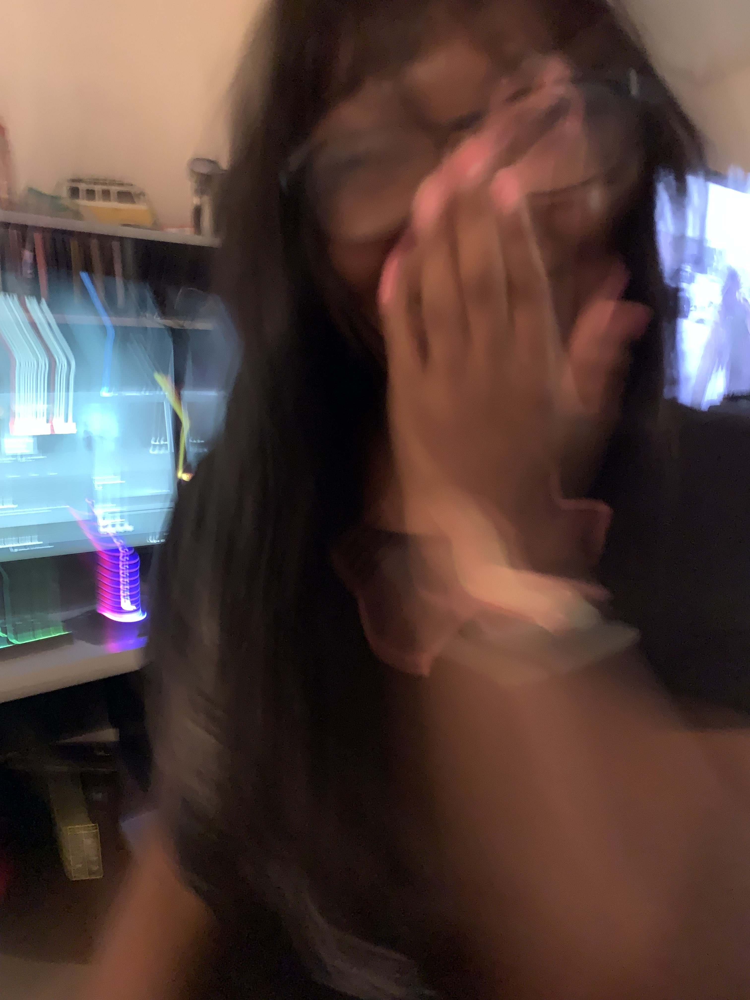
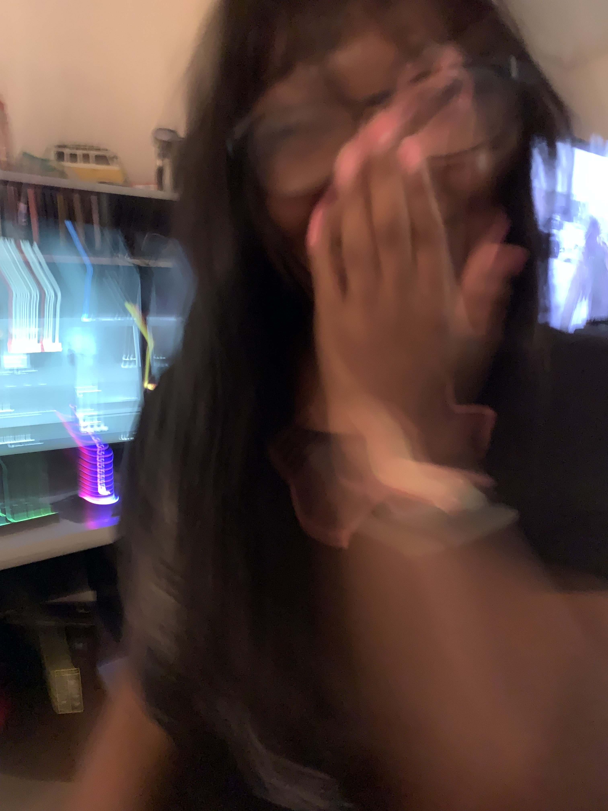

 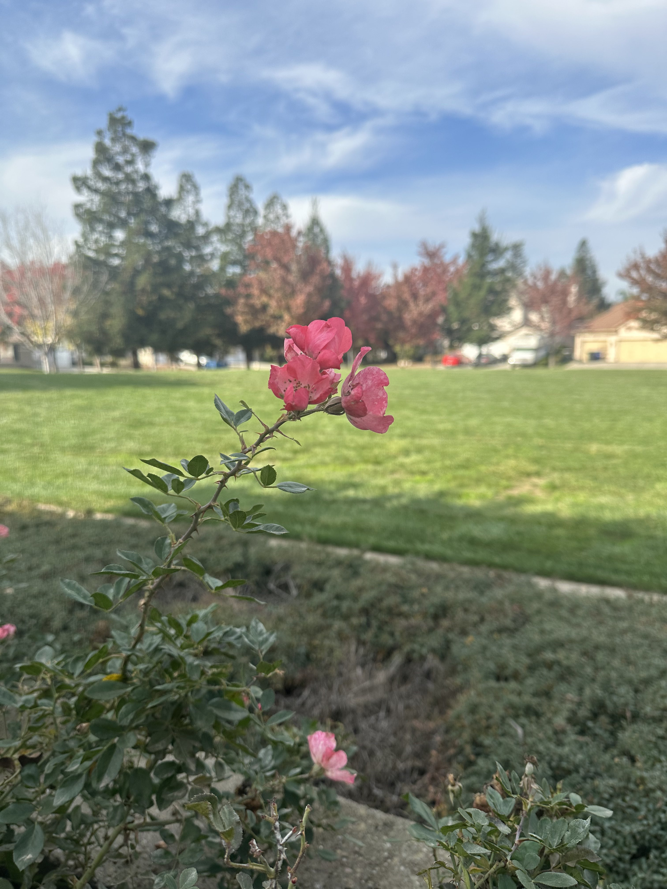
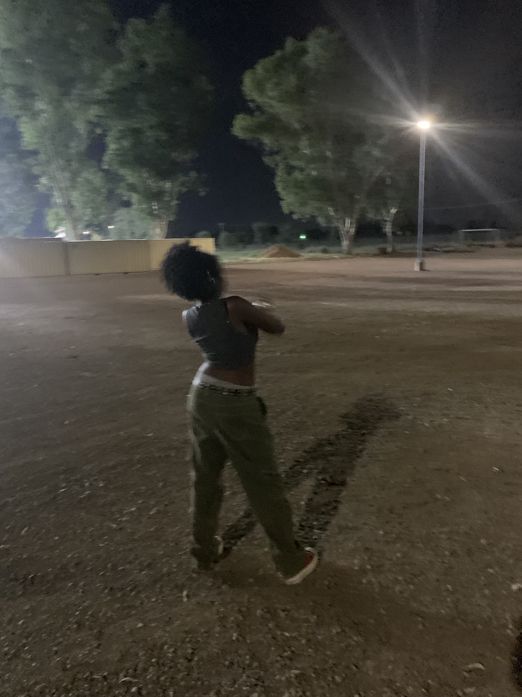
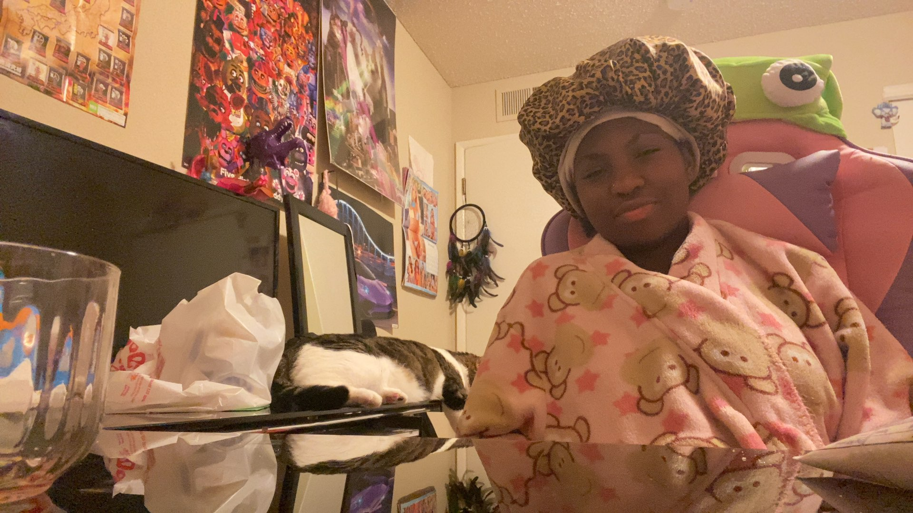
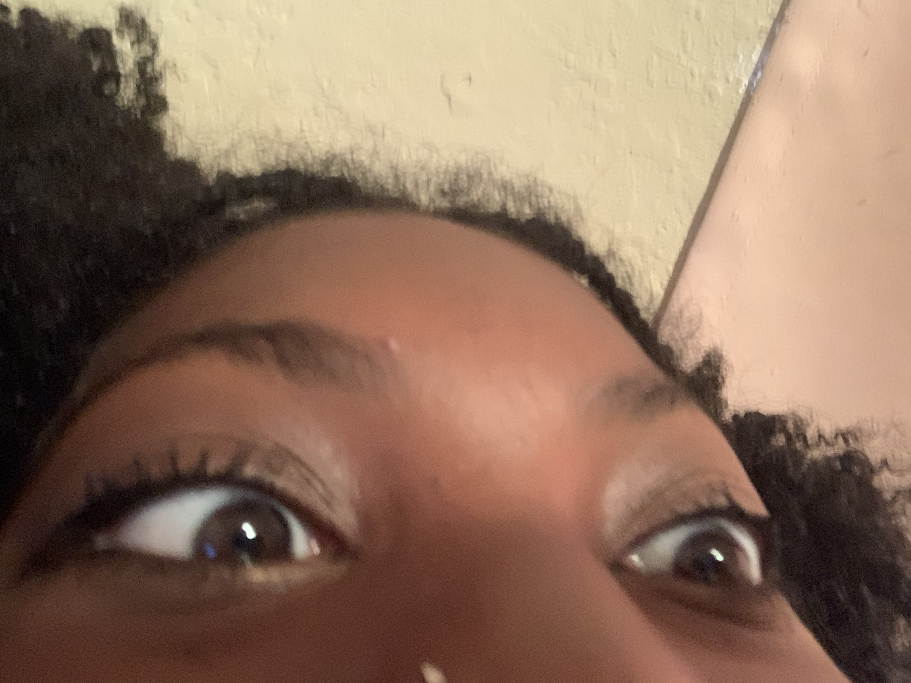
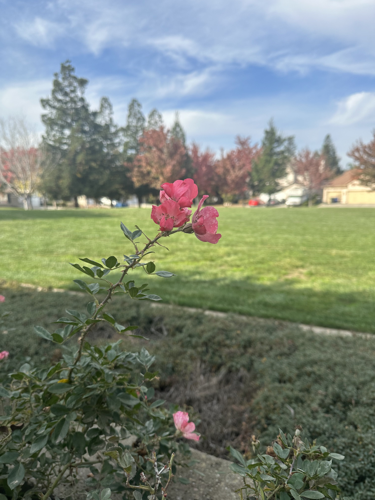
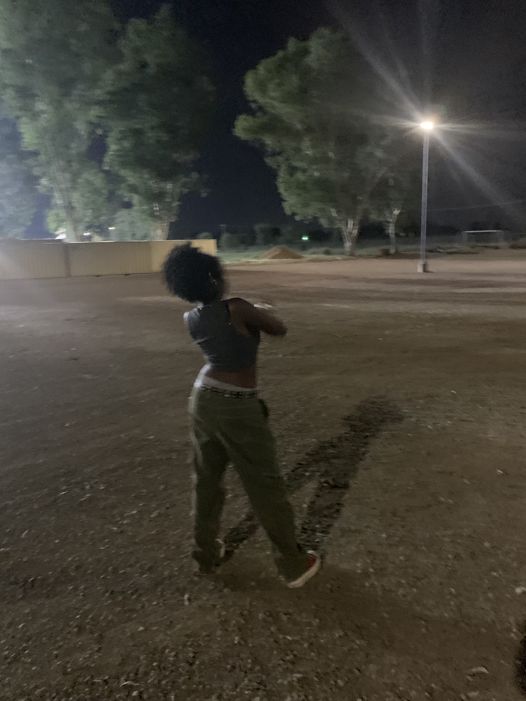
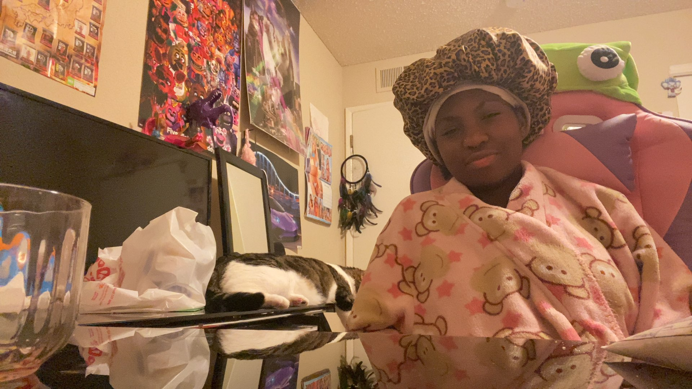
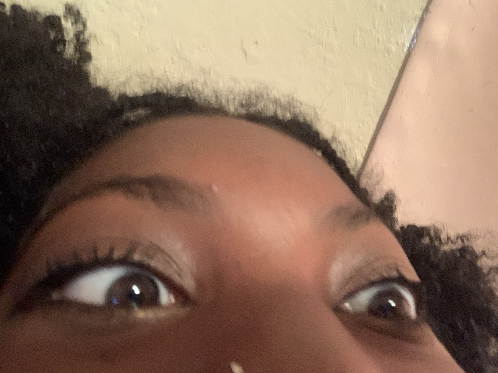
 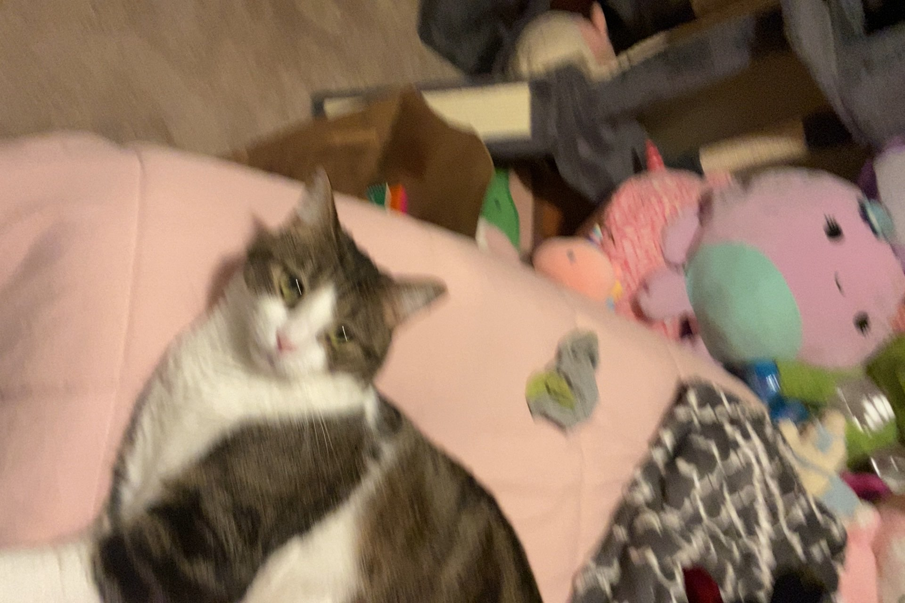
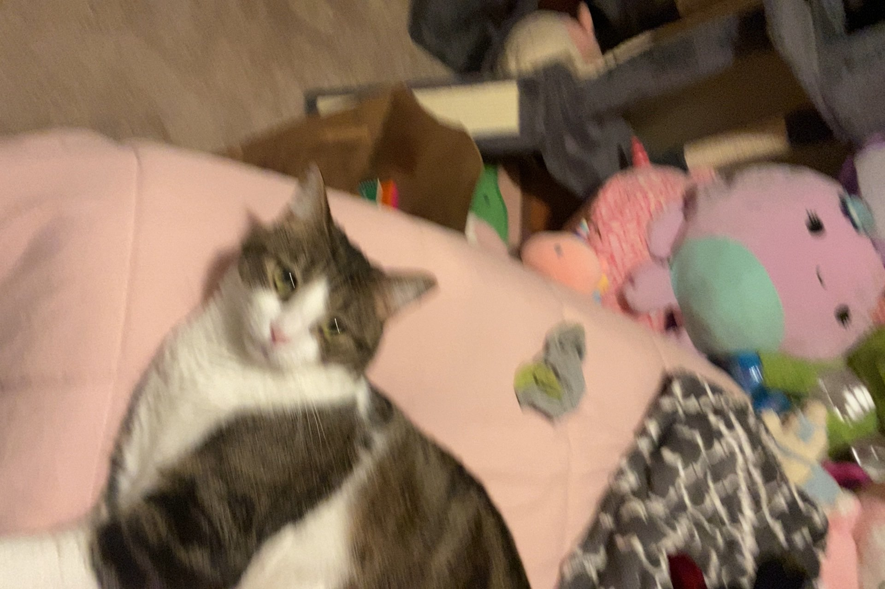
For My Beloved:
Makayla,
I've always wanted to tell you just how much I love you. But simple words aren't enough to
convey that. I need pages, and pages, and pages. And that's just what I have now. So this entire website is dedicated
just to you, my love. I hope you can see yourself the way I do, so you could love yourself the way I do.
Love is much more than just finding someone attractive. It's being there for that someone, always being available and ready
to pick them up and hold them. It's being able to talk about anything for hours. It's being able to
laugh over the most mundane things. It's being able to talk about the uncomfortable things, and still
say we love each other at the end of the day. It's that warm feeling you get when thinking about each other.
That's what we have, Makayla. I am so proud of that, and I am so proud to be your boyfriend.
The amount of things you deal with and still put a smile up afterwards is truly incredible. That
is something seriously admirable about you. Whether it be from school, your grandma, or even me. Your strength
is definitely something to be proud of. You are so cautious and catering towards me, sometimes I wonder what I did
to deserve such an amazing girl! Trust me, every little thing you do for me, I notice. I will never take you for granted.
Never did I realize how much my life would change, that day on June 28th. If there is one day I could go back and revisit,
it would be then. Getting to know so much about you and the depths of your soul through this whole relationship
has been euphoric. There really is no one I would rather be with than you. No one can replace you, and no one will.
You're my break in the clouds, Makayla. When everything is cloudy and gloomy, you're there to bring that light. Without
fail, you're always there. I hope I can be that way for you, too. Whatever your problems are, I will listen, no
matter what. I'm your boyfriend and I love you. It's the very least I could do for you. So never be afraid to
talk to me about anything, my love.
I really am so sorry for what you've gone through in the past. You deserve none of that, you are such a nice, sweet
girl. But what's most important is that you've pushed through that, and now you're here.
I'm proud of you, Makayla. You really do impress me every day. I hope you're a little bit happier where you are right now.
Your smile is the cutest thing EVER Makayla!!! I love how your eyes get real squinty and your teeth show too!!
Or when you're laughing so hard it makes no noise. It is so cute and I look foward to seeing it everyday!
Every single one of these pictures are perfect. I really do find you so adorable, in any instance. Whether that's real life or
in a picture. You are always so incredibly gorgeous no matter what. You could be working on your homework or washing your face
and I'll end up just entranced by your beauty, unable to look away. That's the kind of thing you do to me.
I can confidently say you've brought upon some of the best times of my life. And we've only been together for 7ish months! Isn't that crazy?
Every little moment of every single activity with you has been wonderful. Even if it's something small like just laying in bed
next to you. I will always cherish every moment with you.
I really could go on and on about you, Makayla. I'm looking through these pictures right now, and you are SO pretty! Sometimes
I'll just look at pictures of you in my camera roll. Your eyes are so beautiful I get lost in them, even through the screen.
I love the way your eyelashes along with your irises look. Or your hair!
Your hair is so nice and sometimes I can't help but wanna touch it. You put so much effort into it and it pays off.
Your tummy is really cute too, I wish you could see it like I do. I love it, just like every other part of you.
Your little hands and fingers are like a baby's, it's adorable.
I've seen every single side of you, Makayla. And there isn't a part of you I'm not madly in love with. Your lovey-dovey side, or your
intense, concentrated side. Your silly, playful side, or your seductive side. And yet I know there is just so much more to you left to be
discovered. I can't wait to get even closer to you. I can't imagine myself without you.
But I know how words can be. Sometimes you might feel like they hold a lot of power, and sometimes maybe not.
That's why I hope to show my love more through my actions than anything. So I'll leave it at that for now.
I really enjoyed making this for you, hopefully you enjoyed it too. So now, I finally ask...
Will you be my Valentine, Makayla?
This whole thing is so corny, but I'm okay with being corny if it's for you.
Let me know what you think though! You know how to reach me :)
With much love,
Christopher :D
With much love,
Christopher :D
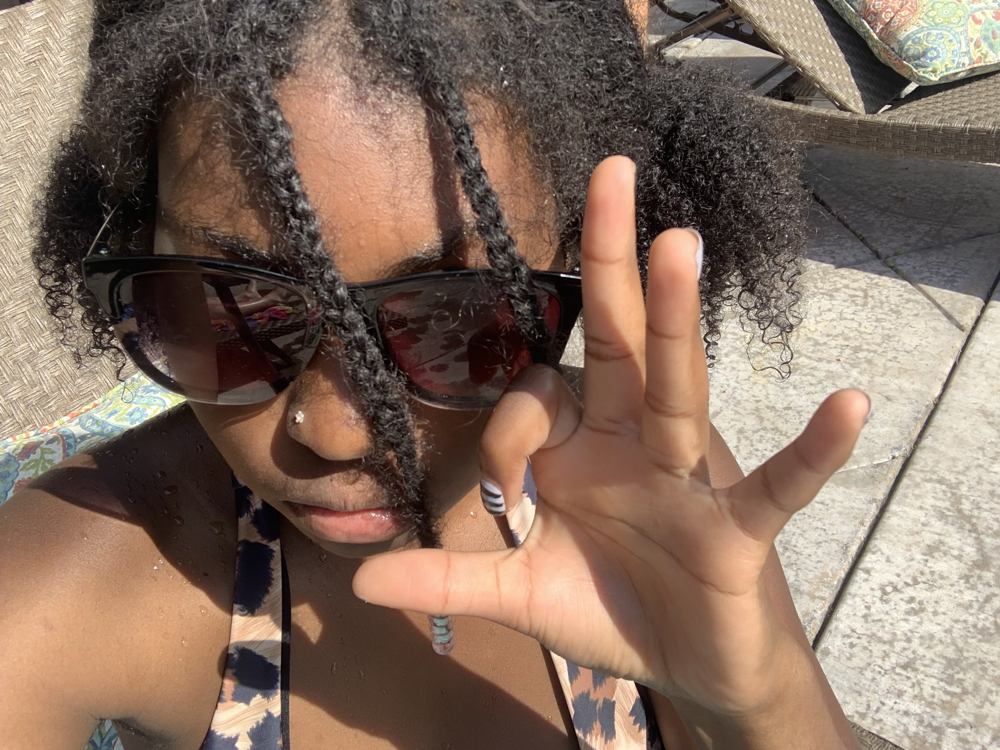
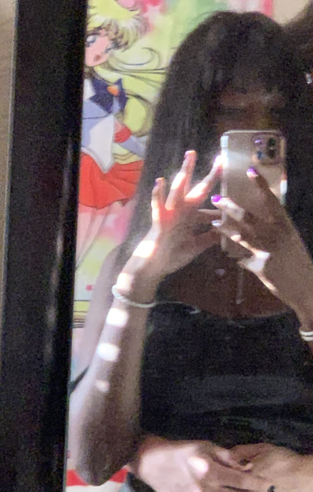
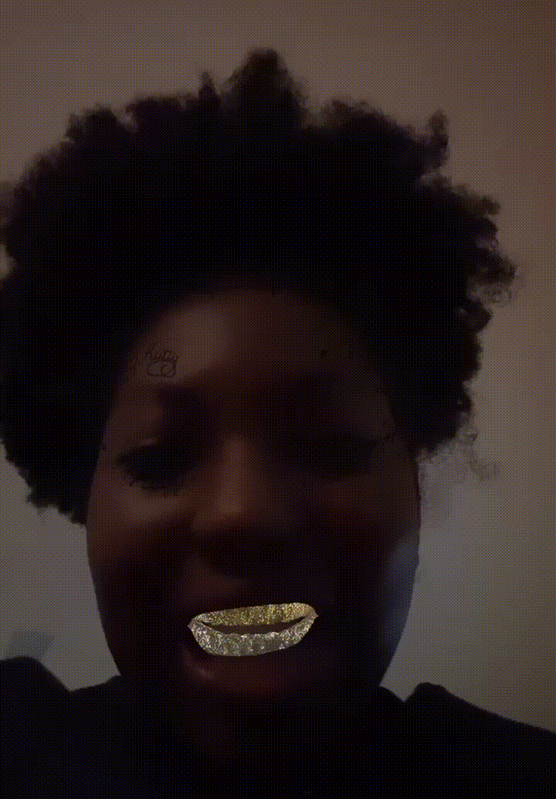
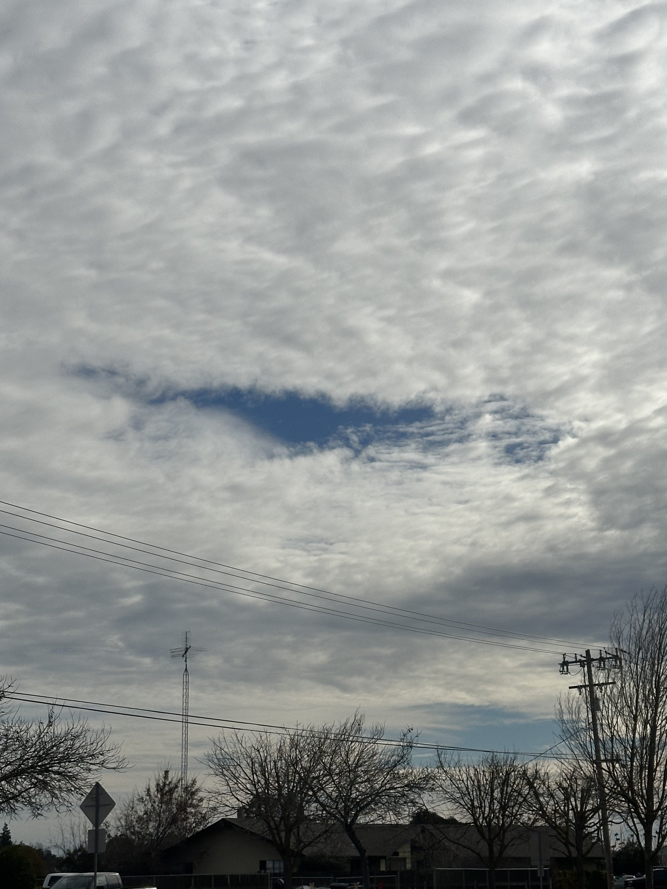
 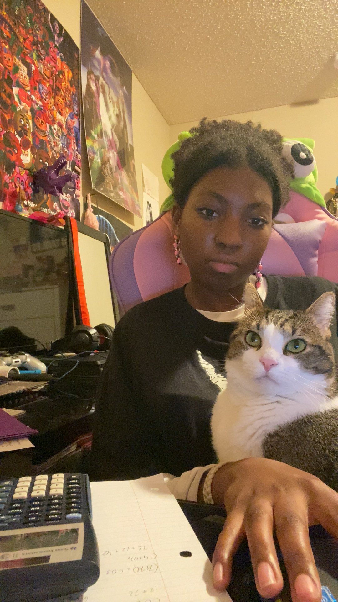
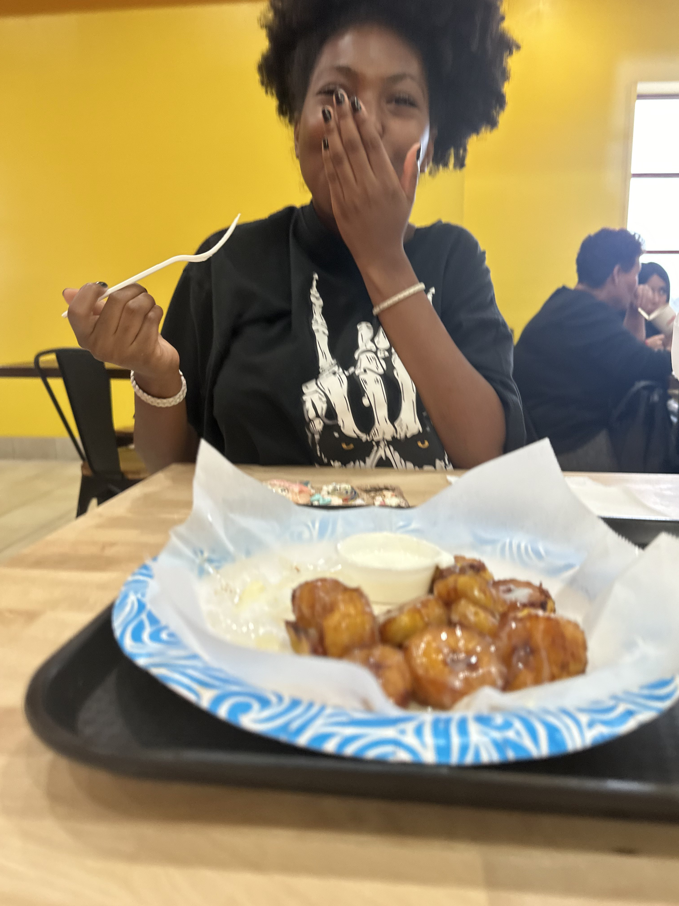
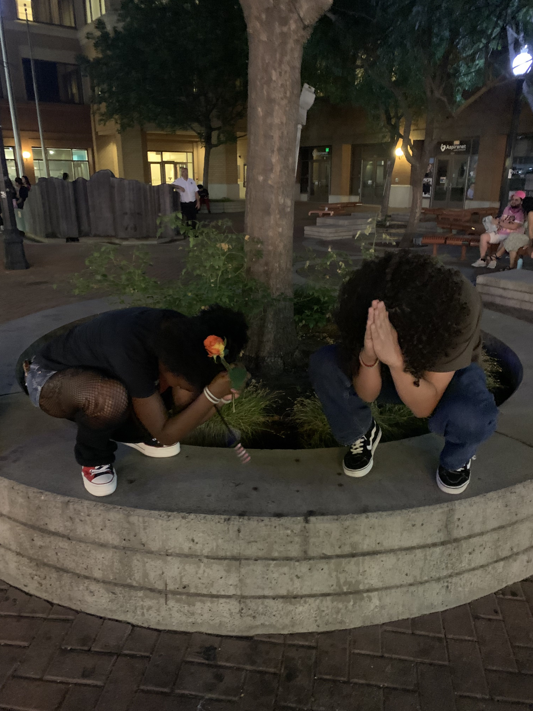
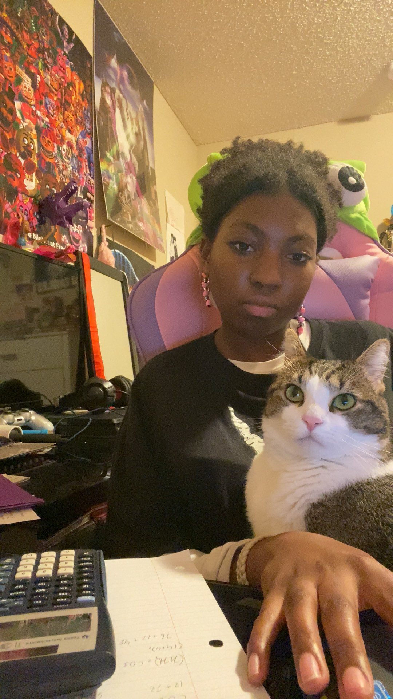
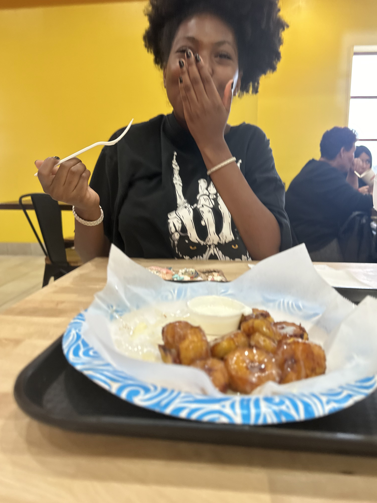
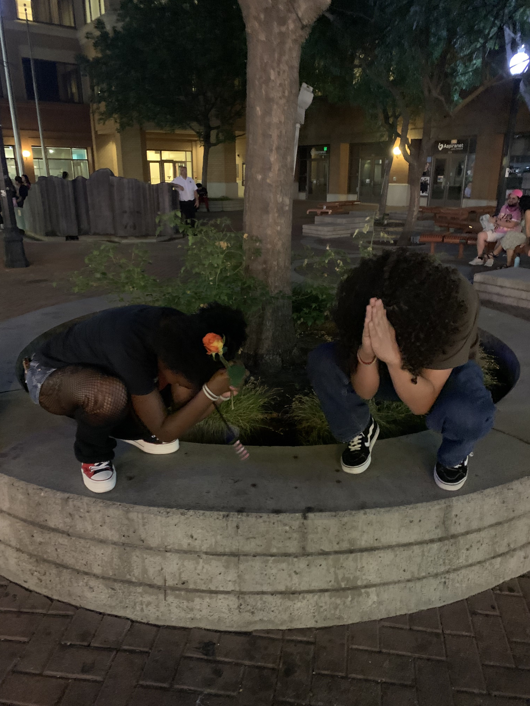

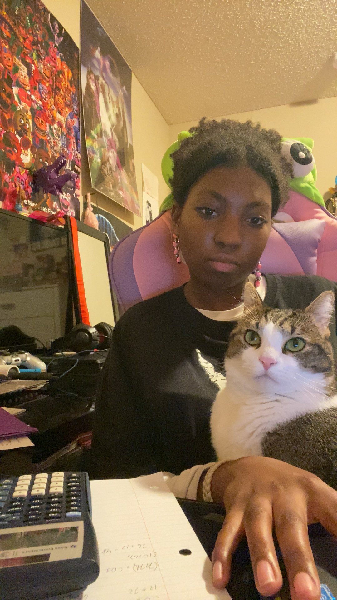
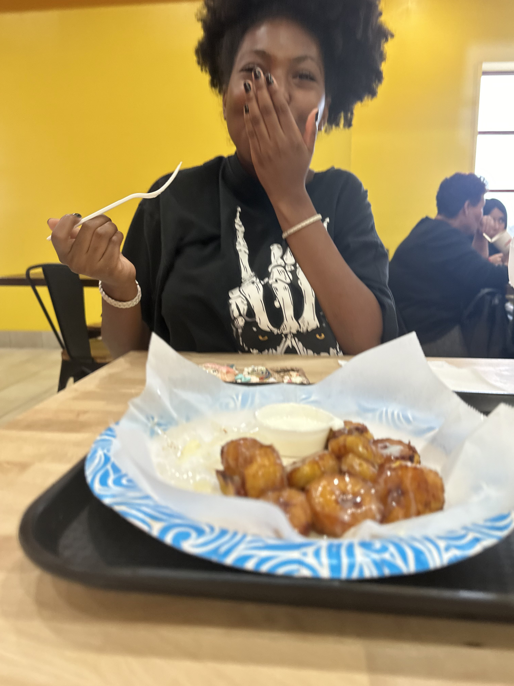
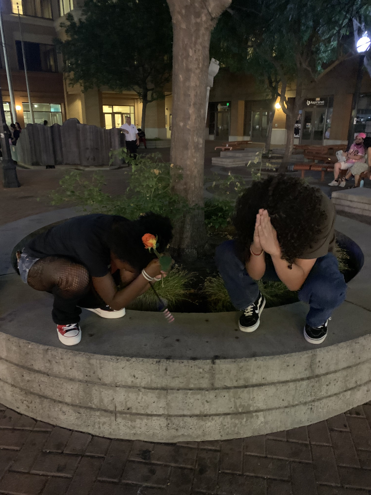